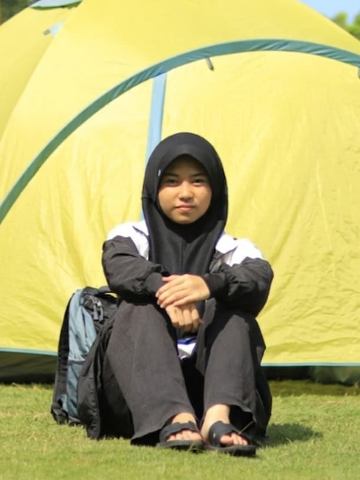

// welcome to my portfolio
IT Systems Enthusiast
I'm a student at SMKN 7 Semarang, majoring in Information Systems, Networks, and Applications (SIJA). While my foundation lies in network infrastructure, I'm at versatile learner with a strong interest in exploring new fields and cross-disciplinary challenges.
// get to know me
I'm the second child of two siblings. I live with my parents and my older brother. I grew up in a supportive family environment that encourages me to keep learning and developing myself.
Soft Skills: Communicative, disciplined, adaptable
Hard Skills: HTML, CSS, basic JavaScript, Canva, basic networking
To become a successful entrepreneur by applying the knowledge of information technology gained during school to support the business I will build in the future.
// what I can do
VS Code
Figma
Git
Terminal
Cisco Packet Tracer
Networking
// things I've built
A collection of training certificates showing my continuous learning and skill development.
Recognition certificates earned from accomplishments in academics and extracurricular activities.
A mental health website designed to support emotional well-being and provide helpful resources.
// credentials
"Terus belajar dan berkembang menjadi versi terbaik diri sendiri."